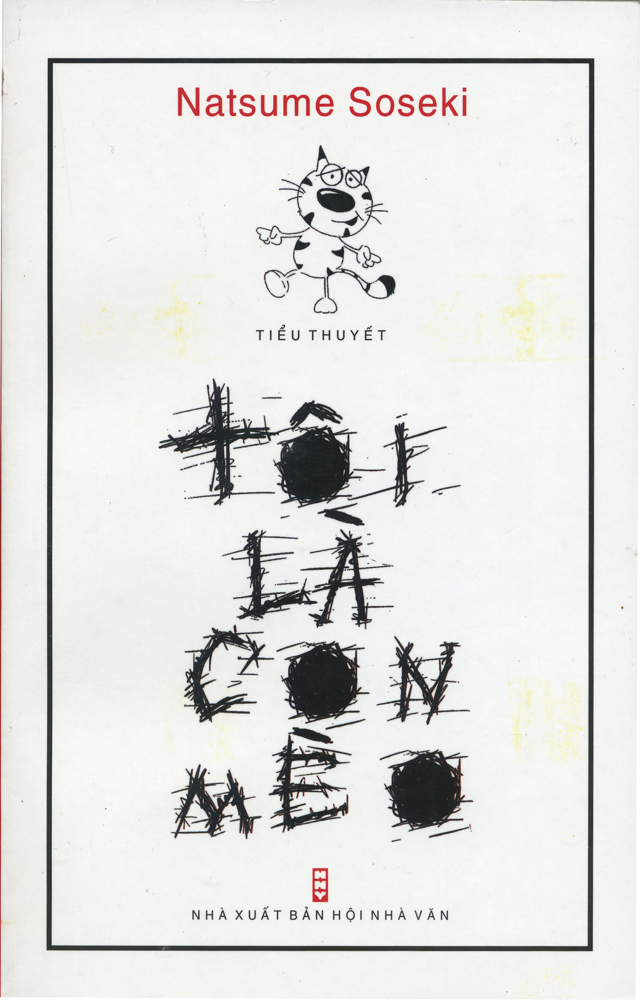

Tác phẩm chính

- Tôi là con mèo (1905)
- Đây là kiệt tác châm biếm, đả kích sự lố lăng của thời đại với hình tượng một con mèo nằm lắng nghe một cách chăm chú các nhà khoa học tranh cãi trong căn phòng của giáo sư Kusami.
- Cậu ấm ngây thơ (1906)
- Tác phẩm kể về một giáo viên trung học vụng về trước sự thay đổi của thời cuộc, là một trong những cuốn sách nhiều độc giả nhất mọi thời đại và hiện nay vẫn còn bán rất chạy.
- Văn học luận (1907)
- Cuốn sách này được đánh giá là tác phẩm phê bình văn học có tính chất tổng hợp và hệ thống đầu tiên ở Nhật Bản hiện đại, trong đó ông cho rằng văn học có hai yếu tố là tri giác và cảm xúc.
- Nỗi lòng (1914)
- Tác phẩm xoay quanh mặc cảm tội lỗi, sự cô đơn, và sự lạc lõng giữa thời đại đổi thay, tỏ rõ quan điểm nhấn mạnh yếu tố xúc cảm trong văn học của tác giả.